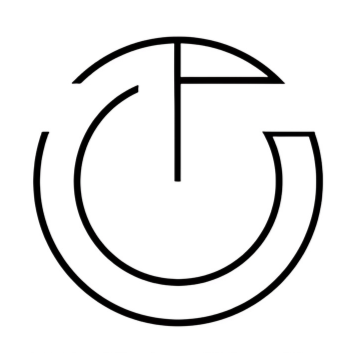

Teco hadir sebagai ruang temu sederhana yang mengedepankan ketenangan dan kenyamanan. Kami percaya bahwa secangkir minuman hangat dan atmosfer yang tepat mampu memicu ide-ide segar serta obrolan yang menyenangkan.
Dengan komitmen untuk terus tumbuh bersama komunitas, Teco menyajikan pilihan rasa terbaik dalam suasana ruang minimalis modern yang ramah untuk siapa saja yang ingin sekadar bersantai maupun fokus bekerja.
Gunakan panah atau geser kartu menu